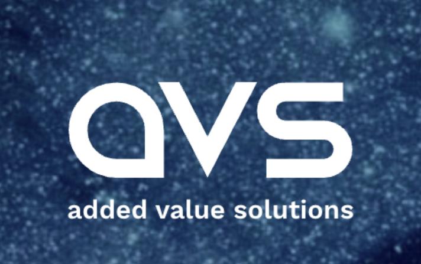

Junior Spacecraft Subsystems Engineer
Conducted cold-gas thruster environmental testing using NASA GEVS and SpaceX rideshare specifications, supported spacecraft subsystem integration, designed test fixtures, and authored qualification and vibration documentation for external facilities.
